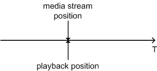
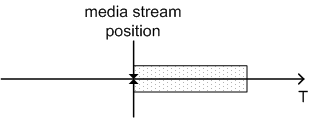
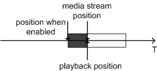
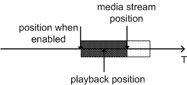
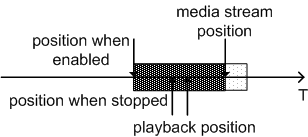
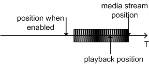

|
Copyright 2008 Motorola Inc. and Nokia Corporation. All Rights Reserved. Specification License |
||||||||
| PREV CLASS NEXT CLASS | FRAMES NO FRAMES | ||||||||
| SUMMARY: NESTED | FIELD | CONSTR | METHOD | DETAIL: FIELD | CONSTR | METHOD | ||||||||
public interface TimeShiftControl
TimeShiftControl extends the MMAPI Player
Controls to provide an intentional artificial delay for playback.
Some implementations may provide some amount of media caching
in real-time during playback. In this case, the implementation can provide
some more flexible control of the player's media time even for broadcast
content. This is known as time-shifted playback or time-shifting. JSR 272
provides TimeShiftControl
to support time-shifting. This control, if supported, can be fetched from a
Player.
TimeshiftControl affects all the media played by that Player (for example video, audio and subtitles).
The initial state of the TimeshiftControl is disabled. In that state the Player is always playing back the live
media stream. The position of the received media stream is the same as the playback position (Diagram 1).

Diagram 1: TimeShiftControl not enabled.
When setEnabled(true) is called a buffer to cache the media is created (Diagram 2).
The buffer is empty at this point. getMaxCacheLength() tells the size of the buffer in terms of time.
That is, how much media can be cached.

Diagram 2: TimeShiftControl enabled and a buffer created.
The buffer is filled with recorded content when the playback progresses (Diagram 3). getLengthOfCachedContent() tells
how much media has been cached so far.

Diagram 3: Buffer is filled while the media stream is received.
When Player is stopped the media will continue to be cached (Diagram 4). Player displays the frame
that was visible when stop was initiated.

Diagram 4: Buffer is filled even while Player is stopped.
When Player is started again the playback will start from the position where it was stopped (Diagram 5).
The playback is now behind the real stream as much as is the duration of the time the Player was stopped.
Player.setMediaTime() can be used to set the playback to any position within the cached content.

Diagram 5: When Player is started again the playback starts from the position it was stopped.
Given enough time, the buffer is full and old contend is deleted while new content arrives (Diagram 6).
Now getMaxCacheLength() and getLengthOfCachedContent() should return the same value.

When TimeShiftControl is enabled Player.setMediaTime() behaves
differently from a normal Player.
Player is stopped for so long that the beginning of the timeshift buffer reaches playback position,
a PLAYBACK_REACHED_TIMESHIFT_BUFFER_LIMIT event is posted. Timeshift buffer keeps buffering new content and
removing old one.
When Player is started again the playback continues from the beginning of the buffered content.
When TimeShiftControl is not enabled Player acts as specified in its documentation.
TimeShiftControl.setEnabled(false) clears and frees the buffer. Media time of the Player
is set to the media time of the received stream. In other words, when Player is showing buffered content
and TimeShiftControl is disabled the Player starts automatically show the live stream.
RateControl can be used to control the playback rate of the (possibly delayed) media.
javax.microedition.media.control.RateControl| Field Summary | |
|---|---|
static java.lang.String |
PLAYBACK_REACHED_TIMESHIFT_BUFFER_LIMIT
PlayerListener event to notify that playback has reached the limits
of the timeshift buffer. |
| Method Summary | |
|---|---|
int |
getCachedContentLength()
Gets the length of the cached content. |
int |
getMaxCacheLength()
Gets the maximum length of the cached content. |
boolean |
isEnabled()
Queries the status of the delay. |
void |
setEnabled(boolean enable)
Enables the delay. |
| Field Detail |
|---|
static final java.lang.String PLAYBACK_REACHED_TIMESHIFT_BUFFER_LIMIT
PlayerListener event to notify that playback has reached the limits
of the timeshift buffer.
This event is posted when
RateControl is set to
normal playback speed by the implementation.
RateControl is not changed by the implementation.
Implementations use this constant to post the event. Applications can test the event
by using "==" operator instead of String.equals() method.
| Method Detail |
|---|
int getCachedContentLength()
int getMaxCacheLength()
Control is enabled a non-zero
length is returned. 0 is returned if Control is not enabled.boolean isEnabled()
void setEnabled(boolean enable)
|
Copyright 2008 Motorola Inc. and Nokia Corporation. All Rights Reserved. Specification License |
||||||||
| PREV CLASS NEXT CLASS | FRAMES NO FRAMES | ||||||||
| SUMMARY: NESTED | FIELD | CONSTR | METHOD | DETAIL: FIELD | CONSTR | METHOD | ||||||||